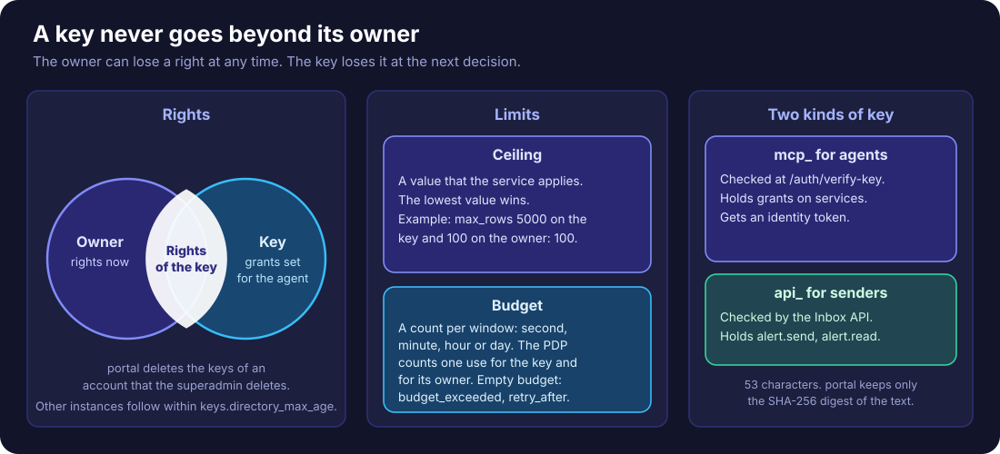

Without the block keys, the keys are off. Each address of the key pages answers 404.

The picture has three parts. On the left, the rights of a key are the overlap of the rights of the owner and the grants of the key. In the middle, a ceiling takes the lowest value, and a budget counts the uses in a window. On the right, an mcp_ key is for agents and an api_ key is for senders.
The two kinds of key
A key has exactly one kind. The prefix of the key text gives the kind. The kind decides who verifies the key.
| Prefix | Kind | Used by | Verified by | At the other verifier |
|---|---|---|---|---|
mcp_ | MCP key | Agents | The key edge, /auth/verify-key | Refused: 401, no detail |
api_ | API key | Services, webhooks, callers such as Grafana and Alertmanager | In process, by the API of the Inbox on the portal port | Refused: 401, no detail |
whk_ | Reserved | Nobody | Nobody | Refused as an unknown prefix |
The key text has 53 characters: the prefix of 4 characters, 43 random characters and 6 checksum characters. The random characters are a-z, A-Z and 0-9. The checksum is the CRC-32 of zlib (polynomial 0xEDB88320) of the prefix and the 43 characters, written in base62.
The portal shows the text one time, when it makes the key. It keeps only the SHA-256 digest and a hint. The hint is the first 4 of the 43 random characters.
A verifier refuses an unknown prefix, a bad length, a bad character and a bad checksum before any lookup. It then checks the kind. All these refusals are 401 with no detail. A key of another system with another length is refused too.
Switches
The block keys has two switches. keys.mcp has the default true. keys.api has the default false. A kind that is off has no key, no right, no chip and no option in the selector. The key edge or the API of the Inbox refuses its keys.
- The kind
mcpneeds the blocksidentityandpdp. - The kind
apineeds the blockinbox. - A block
keyswith both kinds off stops the program at start. - A block
api_keyneedskeys.api = true. A blockkeyof a blockuserneedskeys.mcp = true.
Rules of the keys
- A key follows its owner. This holds for both kinds. The rights of a key are the rights that the key holds and the current rights of its owner. When the owner loses a right, the key loses it at once. Other instances follow within
keys.directory_max_age(default 30 seconds). - A key is deleted with its owner. When the superadmin deletes an account of the database, portal deletes its keys, their grants and their counters. The page of the account tells the number: "Delete carol and 3 keys?". An account of the file cannot be deleted.
- Creation rights are by kind.
keys.own.createandkeys.own.useapply to the resource typekey_kind, with the nodeskey_kind:mcpandkey_kind:api. An account can have the right to make MCP keys and not API keys. The ceilingmax_key_lifetimehas one value for each kind. - The page shows only what the account may make. With two kinds, the page of a new key has a selector. With one kind, it has no selector. With no kind, the list has no New key.
- A key holds what its kind lists. An MCP key holds grants on services and the two actions of the questions of the Inbox (
question.askandquestion.cancel). An API key holdsalert.send,alert.readandalert.send_user, and the two actions of the questions. It holds the grantaccess on service:portalfor the budgetsalertsandquestions. An API key holds no grant on another service. A key never holds an actionkeys.*. - A key never goes beyond its owner. The account can tick only the rights that the owner holds. A right that the owner lost has a warning mark in the form.
- A key has an interaction. The value is
conversationalorone_shot. The default isconversationalfor anmcp_key andone_shotfor anapi_key.- A
conversationalkey is for an agent that discusses with a person in free text. - A
one_shotkey is for a system that decides with no free text. It can ask closed questions only: achoiceor aconfirm, with noallow_customand noallow_ask_back. Else the answer isinteraction_not_allowed. - The owner sets the value with two radio buttons in the form of the key. The agent cannot set it.
- A
- A key has a mode of the agents. The value is
key,discoverorenrolled. It says what portal does with the agents that share the key. The form of the key has the field only when the file has the blockinbox.agents. The default isdiscoverfor anmcp_key andkeyfor anapi_key. See Inbox: agents. - A key has a name and an id. The name has 1 to 64 characters, with no control character. The id of a key of the database has 16 characters of
0-9anda-f. The subject of a key in a question to the PDP iskey:<id>. - Counts are bounded. A key holds 512 grants at most. A user has
keys.max_per_useractive keys (default 100). The expired keys and the keys that are too old do not count.keys.default_lifetime(default 30 days) is the life that the form proposes. The form uses the lower of this value andmax_key_lifetimeof the owner.
The pages and the edge
- Key list: the list of the keys is a panel of the tab Access of the settings pages (
/auth/settings). A key has a kind icon. Chips filter the list by kind and by owner. A box in each row selects keys for Revoke. - No list page:
GET /auth/keysdoes not exist. - Key form: the head of the list has New key. It opens the page
GET /auth/keys/new. The pageGET /auth/keys/edit?id=<id>changes a key. Cancel and Create (or Save) are at the top right. - Kind selector: with two kinds, the page of a new key has a selector that loads the page again with
?kind=. An API key has the matrix of the Inbox and the budget of the alerts. An MCP key has the services only. - Key text: the page that follows the creation shows the text of the new key one time, with a Copy button and Done. It has
Cache-Control: no-store. portal puts the text in no address and in no log. A refused form returns to the form, with the reason in a notice. - Edge:
GET /auth/verify-keyis the ForwardAuth address for the key routes of agents. It reads only memory. - Good key: a good
mcp_key gives status204and an identity token in the headeridentity.header. Traefik accepts each 2xx status. - Bad key: each failure gives status
401, an empty body and the headerWWW-Authenticate: Bearer. When the request has the text of a key, the header also haserror="invalid_token". The answer never shows the cause. The cause is in the log (key_check_failed) and in the metrics. - Which service: the edge finds the service of the path as the gate does (see Grants and the gate). The key opens a service only when a grant of the key and a grant of the owner give
accesson it. A path that no service owns opens nothing. - Age of the document: the age of the action document of the service never changes the answer of the edge.
accessstaystrue(protocol 8.3 and 11.1). - Senders and agents: the routes of the Inbox verify the
api_keys, and the MCP endpoint verifies themcp_keys. See Inbox.
The causes of a refusal in the log are no_key, bad_format, wrong_kind, unknown_key, expired, key_too_old, owner_unknown, owner_cannot_use_keys, no_service, bad_forwarded_header, no_access, keys_disabled and directory_too_old.
Rights, limits and commands
- Rights of the portal for the keys: the service
portalhas these actions for the keys:keys.own.read,keys.own.create,keys.own.edit,keys.own.revoke,keys.own.use,keys.all.read,keys.all.revokeandusers.read. The ceilingmax_key_lifetimeofkeys.own.uselimits the age of a key. The Inbox adds its own actions to the same service (see Inbox). - Revoke: the page revokes keys one at a time or in a group. The command
portal revoke-keys --config FILE (--user LOGIN | --all)revokes keys without the web page. It makes no key and does not revoke a key of the file. With SQLite, it refuses to run when an instance runs. - Accounts of the file: a block
user "<login>"defines an account of the file, with optional blockskey "<name>". These blocks are MCP keys of the file. An API key of the file is a blockapi_keyof the blockinbox. A login comes from the file or from the database, never from both. The list of keys in the tab Access lists the MCP keys of the file. It does not list theapi_keyblocks. - Counters: the table
budget_countersholds the counters. PostgreSQL uses a second pool of connections (pdp.counter_connections).keys.max_counter_rowslimits the number of rows (default 2,000,000).
Limits
A grant can hold limit values. There are two kinds of limit. The protocol defines them in sections 6 and 7.
- A ceiling is a value that the service applies to one use, for example
max_rows. The PDP gives it incontext.limits. The lowest value among the grants wins. For a key, the values of the key and of its owner both count, and the lowest wins. - A budget is a count in a window. The window is
second,minute,hourorday. The value is a list of 1 to 4 items, one for each window. The PDP counts each window on its own counter. - The PDP counts one use for the key and for its owner. It takes the unit from both counters or from none. When a budget is empty, the PDP answers
falsewith the reasonbudget_exceededandretry_after. - A budget value is on the grant
accesson the whole service. A budget value on another grant is refused. - A limit that a grant does not give is a limit that portal does not set. The caps of the service still apply.
Rules for the numbers:
- A limit is a whole number from 0 to 9,007,199,254,740,991. This is 2^53 - 1, the largest integer that is safe in JSON.
- An amount of a budget is from 1 to the same value.
- These rules apply to
minandmaxof a ceiling. They also apply to a value of a ceiling and to an amount. - portal refuses a larger number in a document, in a form and in a file.
- A grant has 8 limit values at most. Their text has 1024 bytes at most (protocol 6.1).
Limits of a service
A service declares its limits in the list limits of its action document. The settings pages read the declaration to show the text of each limit. A document declares 16 limits at most. An item has these members, and no other member:
| Member | Rule |
|---|---|
name | A name of 1 to 32 characters: a-z first, then a-z, 0-9 and _. A ceiling starts with max_ and has a noun after it. A budget never starts with max_. |
label | The text for the page, up to 60 characters. |
description | A text of up to 300 characters. |
unit | The unit, up to 20 characters. |
kind | ceiling or budget. |
min, max | The range of a ceiling. A ceiling needs both, with min not above max. A budget has neither. |
An action lists the limits that apply to it in its own list limits. The PDP ignores a value for a limit that the action does not list, or that the document does not declare. The metric portal_limit_values_undeclared counts the limit values that no document declares.
The service portal has its own limits. The ceiling max_key_lifetime is on keys.own.use. The budget alerts is on alert.send and alert.send_user. The budget questions is on question.ask. The value of a budget is on the grant access of the service portal, as for each other service.
Source of this page: docs/keys-and-limits.md.